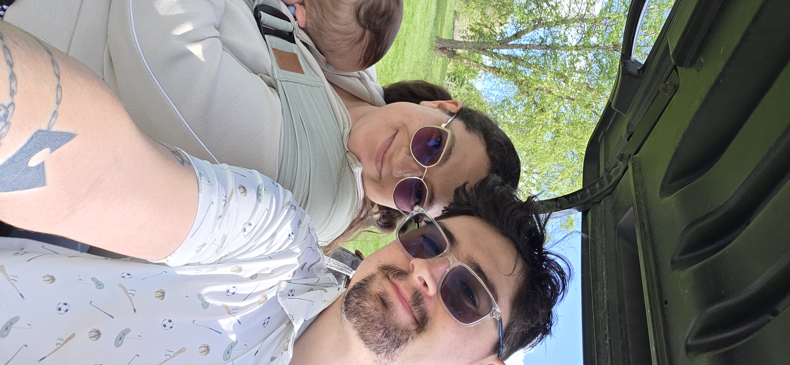

Singing and Music
Singing has always been an important part of Alyssa's life. Music gives her a healthy way to express her emotions and feelings. She enjoys singing and wishes she had more time to make music a bigger part of her everyday life.
Creativity and Fun
Alyssa's hobbies give her opportunities to express herself, try something new, and spend meaningful time with the people she loves.
Singing has always been an important part of Alyssa's life. Music gives her a healthy way to express her emotions and feelings. She enjoys singing and wishes she had more time to make music a bigger part of her everyday life.

Alyssa recently began rug tufting with her husband. The hobby gives her a creative outlet while also giving them something new to learn together. The time spent creating rugs has made the hobby both fun and meaningful.

Golf is another new hobby Alyssa has started with her husband. Learning the game together gives them more opportunities to spend time with one another, have fun, and create new shared experiences.